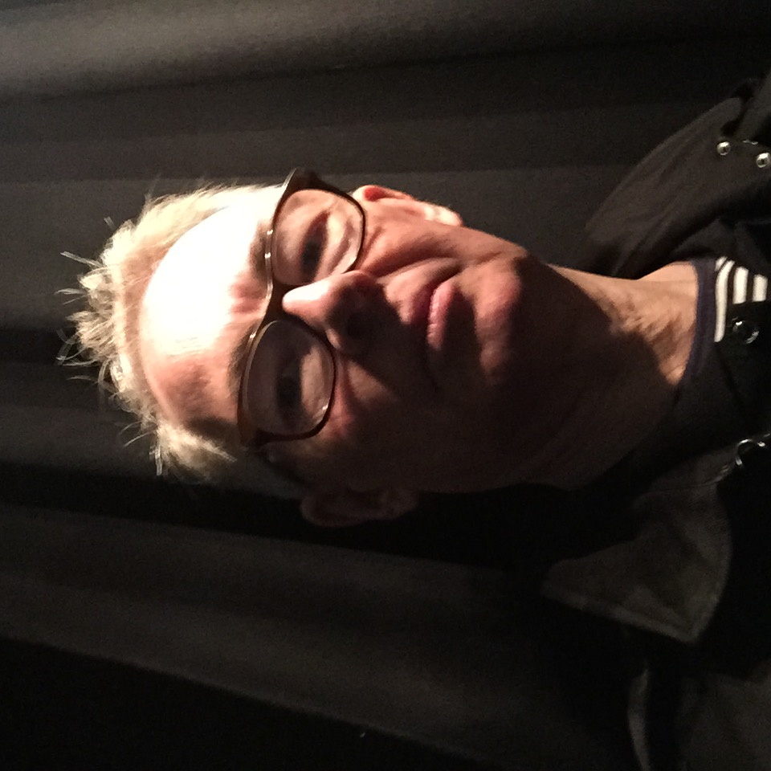

I interpret an intense interest in science and technology through the use of bold colours and expressionist techniques. A passion for mission led innovation is interpreted in large canvases with a powerful sense of purpose. The intersection between art and science gives full reign to my creative instincts.
I am looking for owners with shared beliefs; change agents with a sense of social purpose, or others who appreciate that risk taking is essential for progress.
Instagram
- paul@mindstream-ai.com - 07810155810